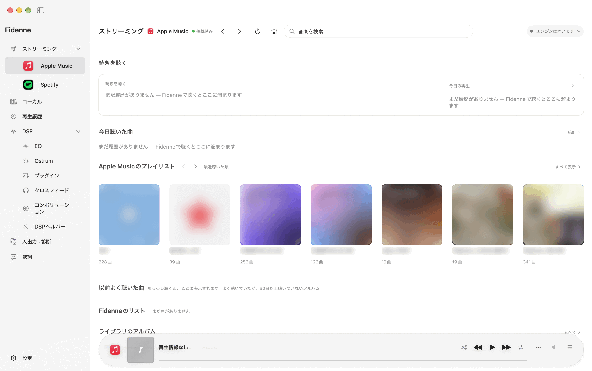
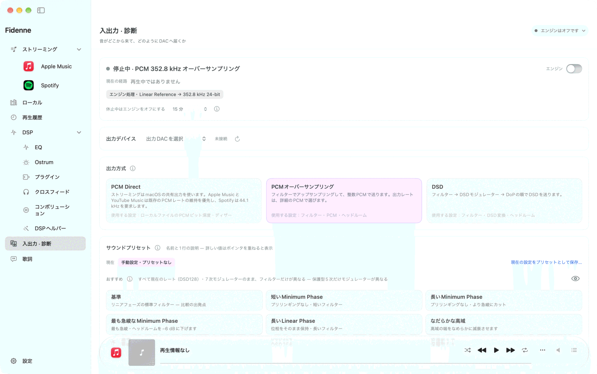
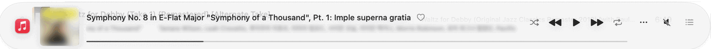
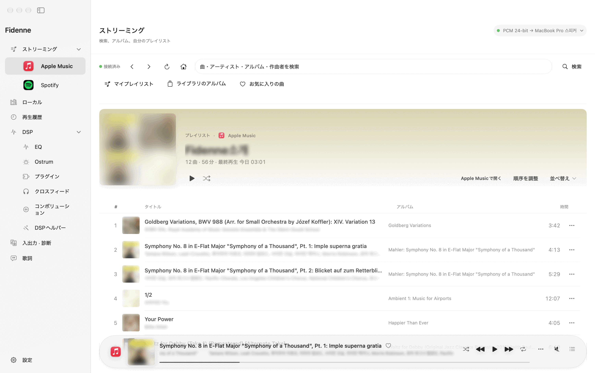
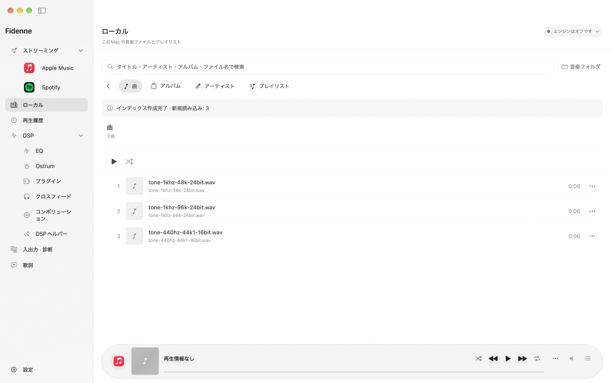
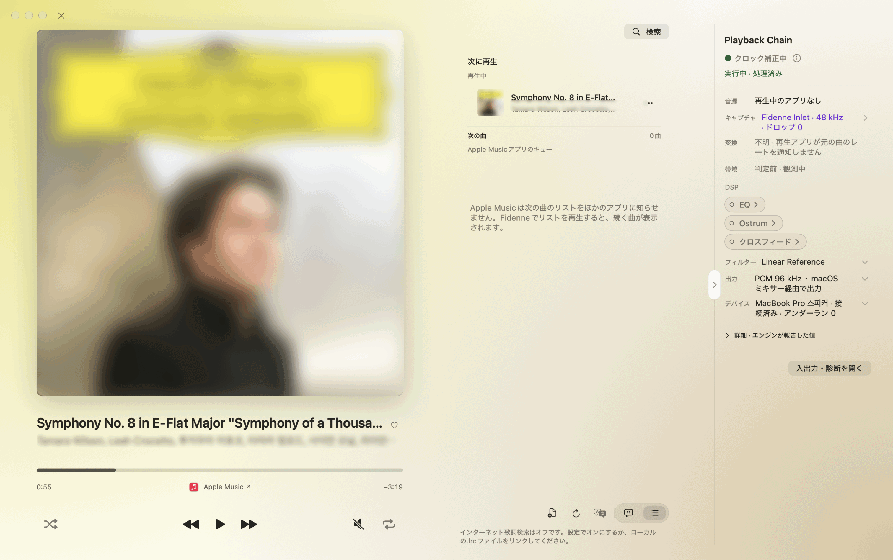
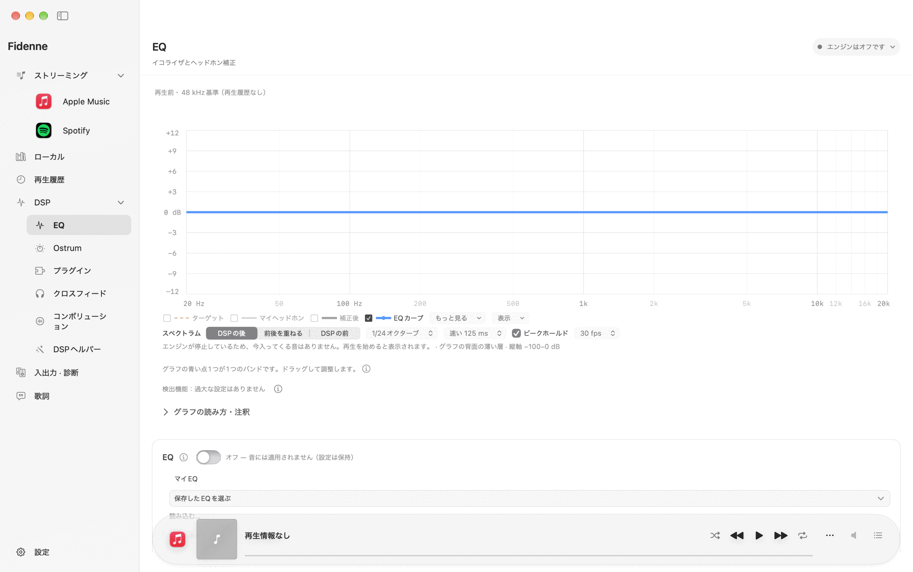
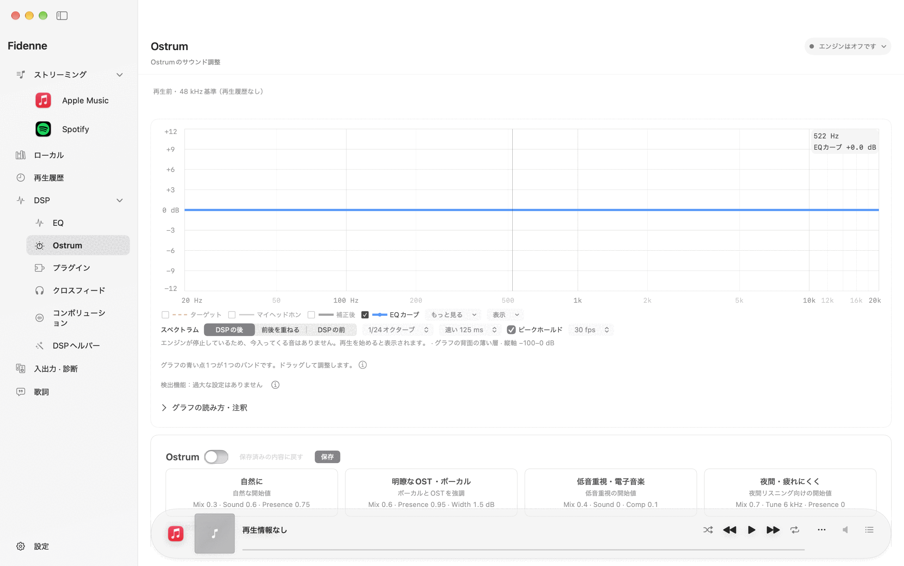
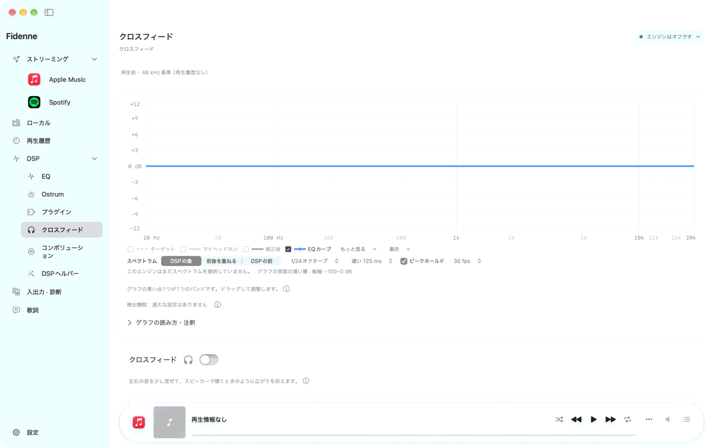

Fidenne · 公開ベータ1 · 0.7.0
インストールと使い方ガイド
ダウンロードして最初の音が出るまで、そして使い方まで、画像を見ながら一歩ずつ進めます。
ダウンロード — インストールファイル（.dmg）AppleシリコンMac · macOS 15以降 · 有線USB外付けDAC推奨
まだ公開ベータのため、変わる部分や修正中の部分があります。

第1部
インストール
ダウンロードして最初の音が出るまでを、順に進めます。
インストール 1
音はこのように通ります
Fidenneで出力方式を選び、EQ・Ostrum・クロスフィードとフィルターで音を整え、Playback Chainで音の通り道を確認します。音は再生アプリ → Fidenne → DACの順に通ります。
- 音楽は、Apple Music・Spotify・YouTube Musicのアプリ（またはブラウザ）でいつもどおり選んで再生します。Fidenneはその間で音を受け取って処理し、DACへ渡します。
- Playback Chainで、音の通り道と適用中の処理を確認します。音を保存したり、ファイルにしたりはしません。
- 聴いているサービスのアプリをFidenneから操作し、曲情報や歌詞もあわせて見られます（再生は各サービスのアプリが行います）。再生回数の集計や広告は各サービスのままで、Fidenneは広告をブロックしたりスキップしたりしません。
インストール 2
用意するもの
AppleシリコンMac（M1以降のチップ）、macOS 15以降、そして有線USB外付けDACをおすすめします。
- メニューバーのAppleロゴ › このMacについてを開きます。チップ名が「Apple M」で始まっていれば大丈夫です。
- macOSが15より古いとアプリが開かないので、システム設定でソフトウェアアップデートを先に行います。
- 外付けDACをUSBで接続します。音を整える機能（EQなど）は、エンジンが使うPCMレート（44.1〜768 kHz）のうち1つ以上に対応した2チャンネルDACで動作します。
内蔵スピーカー・3.5 mm端子・AirPods・HDMIでも、FidenneがEQ・Ostrum・クロスフィード・フィルターを適用した音をPCMで送ります。最後にmacOSがシステムミキサーで混ぜて出力するため、ビットパーフェクトではなく、DSDは使えません。対応レートを1つも受け付けないデバイス（多くのドングルなど）は、音をそのまま聴くPCM Directのみで出力されます。
インストール 3
ダウンロード
インストールファイル（.dmg）は、Fidenneの公開ページのリリース欄から入手します。
- リリースページ（
github.com/fidenne/fidenne/releases）で、いちばん上の最新の項目を開きます。 .dmgで終わるファイルをクリックします。.dmgはMacでアプリをまとめて配布するディスクイメージファイルで、ダウンロードしたファイルは通常「ダウンロード」フォルダに入ります。- ダウンロードに時間がかかるときは、終わるまで待ちます。ファイルが開けない、または名前が違うときは、最新の項目かどうかをもう一度確認します。
アプリは署名と公証を経て配布されます。ほかの場所で入手したファイルは使わないでください。
インストール 4
アプリケーションフォルダに移す
ダウンロードしたディスクイメージを開き、アプリをアプリケーションフォルダに置きます。

- ダウンロードした
.dmgをダブルクリックします。小さなウインドウが開きます。 - ウインドウ内のFidenneアイコンをアプリケーションフォルダへドラッグします。
- コピーが終わったらウインドウを閉じ、Finderのサイドバーにある取り出し（⏏）ボタンでディスクイメージを取り出します。
アプリをアプリケーションフォルダに置いておくと、あとでアップデートしやすくなります。SafariでYouTube Musicを使う機能拡張も、そのフォルダから開いたアプリでないとSafariに表示されません。ディスクイメージの中やダウンロードフォルダから直接開かないでください。同じ名前のアプリがすでにあるという表示が出たら、新しいほうに置き換えを選びます。
インストール 5
初めて開く
アプリケーションフォルダでFidenneを開きます。
- インターネットからダウンロードしたアプリなので、macOSが一度「開いてもよろしいですか？」と確認します。開くをクリックします。
- それでも開かないときは、システム設定 › プライバシーとセキュリティでFidenneを許可します。
- MacのバージョンがmacOS 15より古いと、アプリはまったく開きません。その場合はインストール 2に戻ってmacOSをアップデートします。
この確認ウインドウの正確な文言は、macOSのバージョンによって少し異なる場合があります。
インストール 6
初期設定
初めて開くと「Fidenneの初期設定」ウインドウが表示され、5つのステップを進みます（ウインドウの上に1 / 5のように表示されます）。各ステップで戻る・次へで行き来できます。


- 音の出力先のDAC — お使いのDACを選びます。わからなければあとで選ぶのままにします。DACが表示されないときは、接続してから更新します。
- 音の取り込み方法 — 最初からFidenne Inletが選ばれています。音楽アプリが出す音をそのままの状態で受け取る仮想デバイスなので、そのままにします。インストールされていなければインストール…をクリックし、管理者パスワードを一度入力します（その瞬間、すべての音が少しのあいだ途切れます）。Inletのような仮想オーディオデバイスはmacOSがシステムフォルダからしか読み込まないため、別途インストールします。インストールしたくないときはシステムタップを選びます（インストールなしで使えますが、48 kHzで受け取ります）。
- macOSが尋ねること — 今は尋ねず、その機能を初めて使うときに尋ねます。
- Fidenneが行うこと・行わないこと — 読んで次へをクリックします。
- ライセンスとインターネット接続 — 規約の下に確認欄が4つあります（すべてに同意・[必須] 利用規約・[任意] インターネット接続機能を使う・[任意] 問題報告用の診断記録）。必須の欄にチェックを入れると開始をクリックできます。任意の欄はオフのままでも再生できます。同意せずに終了をクリックすると、アプリが終了します。
完了すると、同じウインドウにサイドバー（ページ一覧）とページが表示されます。次回の起動からはこのウインドウは表示されず、選んだ内容はあとから設定で変更できます。インターネット接続に同意しない場合、オンライン機能はオフになります。
インストール 7
権限
権限は、その機能を初めて使う瞬間にmacOSが尋ねます。確認ウインドウが表示されたら許可をクリックします。

- オーディオ録音・システムオーディオ — ほかのアプリが出す音を受け取るとき。「録音」という言葉がついていますが、Fidenneは音を保存しません。
- マイク — Fidenne Inletのような入力デバイスで受け取るとき。保存したり外部へ送ったりしません。
- オートメーション — Apple MusicやSpotifyの現在の曲情報を読み取り、再生・一時停止を伝えるとき。
- Apple Musicライブラリ — ライブラリを読み取るとき。
誤って拒否した場合は、システム設定 › プライバシーとセキュリティで、該当する項目のFidenneをもう一度オンにします。許可しないまま使うと、音が入らなかったり、曲情報が表示されなかったりすることがあります。
インストール 8
初めての再生の前に音量を下げる
初めて再生をクリックすると、音が出る前にこのウインドウが表示されます。

- DACやアンプの音量を0かごく低く下げます。
- 下げました、開始をクリックします。キャンセルをクリックすると、何も開始しません。
- 音を聴きながら、ゆっくり上げていきます。
アプリを起動するたびに最初の再生で一度、このアプリで初めて使うDACでもう一度表示されます。最初に送る音が突然大きいことがあるため、耳と機器を守るためのものです。再生をクリックしても何も起きないときは、このウインドウがほかのウインドウの後ろにないか確認します。
インストール 9
困ったときは
音が出ない、または様子がおかしいときは、問題の確認 (English)で症状から探します。いちばん多い「音が出ない」は最初の項目です。
- 解決しないときは、アプリの診断メニュー › サポート用の診断を書き出す…でサポート用ファイルを作成します。送る前に、ファイルに何が入っているかを画面に表示します。
- fidenne.support@gmail.comにメールを送ります。アプリは何も代わりに送信しないので、送るかどうかは自分で決められます。
GitHubアカウントがあればissueに書き込んでもかまいませんが、診断ファイルは必ずメールだけで送ってください。issueには投稿しないでください。
インストール 10 · 任意
Spotifyの接続 ① 自分のアプリを作る
しなくてもかまいません。Spotifyアプリで曲を選べば、キーがなくてもFidenneが音を整え、再生中の曲も表示します。Fidenneの中でSpotifyの検索・プレイリスト・再生操作を使いたいときだけ必要です。FidenneにはSpotifyのキーが入っていないため、自分のSpotify開発者アプリのキーを作ります。普段使っているSpotifyアカウントでログインすれば大丈夫です。
- ブラウザで
developer.spotify.comを開き、Log inをクリックします。Fidenneのストリーミングページ、Spotifyの横のドット › デベロッパダッシュボードを開くからも開けます。
- ログインしたら、アカウント名のボタンをクリックし、メニューからDashboardを選びます。

- Dashboard画面でCreate appをクリックします。

- App nameとApp descriptionには好きな内容を入力します。Redirect URIs欄には、Fidenneに表示されるアドレス
http://127.0.0.1:53682/callbackを貼り付け（Fidenneのコピーボタン）、Addをクリックします。Which API/SDKs are you planning to use?ではWeb APIにチェックを入れます。Website欄は空欄のままにします。
- 規約の同意欄（I understand and agree with Spotify's Developer Terms of Service and Design Guidelines）にチェックを入れ、Saveをクリックします。

ここで同意するのはSpotifyの開発者規約です。ご自身で同意するもので、この規約はSpotifyが定めています。サイト上のボタンの名前や配置は変わることがあります。
インストール 11 · 任意
Spotifyの接続 ② キーを入れる
作成したアプリのClient IDをFidenneの入力欄に貼り付けます。必要なのはClient IDだけです。ダッシュボードにはClient Secret（秘密鍵）も表示されますが、Fidenneは使わないので入力欄はありません。パスワードのような値なので、誰にも教えないでください。ダッシュボードのアドレスをそのまま貼り付けても、その中のIDを読み取ります。
- Saveすると、作成したアプリのBasic Information画面が開きます。Client ID欄の右端にあるコピーボタンをクリックします。

- Fidenneのストリーミングページ、Spotifyの接続欄に貼り付けてキーを確認をクリックし、形式が合っているか確認します。文字数や使えない文字を指摘されたら、コピーしたときに前後の空白が混ざっていないか確認します。問題なければSpotifyを接続をクリックします。

- ブラウザにSpotifyの同意画面が表示されます。作成したアプリの名前を確認して、同意するをクリックします。

- 「Spotifyの認証応答を受け取りました。Fidenneに戻って接続結果を確認してください。」と表示されたら、接続は完了です。このタブを閉じてFidenneに戻ります。


Spotifyで曲を再生・一時停止・スキップする操作には、Spotify Premiumが必要です。リクエストが多すぎるとSpotifyがしばらく待つよう求めることがありますが、接続はそのままで、案内された時間が過ぎてからやり直せば大丈夫です。接続すると、設定に再生の権限の更新と接続の解除が表示されます。
インストール 12 · 任意
YouTube Music
実験的機能のため、最初はオフになっています。YouTube MusicにはMac用アプリがないので、Safari・Chrome・Edgeで聴き、Fidenneはブラウザの機能拡張（ブラウザに追加する小さなプログラム）で曲情報を受け取り、再生を操作します。音は通常どおりFidenne Inletが受け取り、複数のブラウザに接続した場合は、自分で再生を始めたブラウザに従います。Safariの機能拡張はアプリの中に入っているので、インストールするファイルはありません。

- 設定 › 一般の最上部にあるスイッチでYouTube Musicをオンにします。
- ChromeまたはEdgeを使うには、設定 › プライバシー › ブラウザの機能拡張と接続（Safari・Chrome・Edge）をオンにします。Safariだけを使う場合、このスイッチは不要で、下のSafariでオンにするへ進みます。
- ChromeまたはEdgeでは、同じ場所のインストール案内…をクリックすると、機能拡張のインストールウインドウが表示されます。このウインドウは開いたまま、次の手順に進みます。


Chromeに機能拡張をインストール
- Chromeのアドレスバーに
chrome://extensionsを入力してReturnを押します（インストールウインドウのアドレスをコピー）。デベロッパーモードのスイッチをオンにすると、ボタンが3つ表示されます。
- パッケージ化されていない拡張機能を読み込むをクリックします。フォルダを選ぶウインドウが開きます。

- そのウインドウで⌘⇧Gを押し、インストールウインドウのパスをコピーでコピーしたパスを貼り付けてReturnを押します。

- フォルダ名がChromeに変わったのを確認して、選択をクリックします。

- 拡張機能の一覧にFidenne for YouTube Musicが表示されれば、インストールは完了です。バージョン番号は異なる場合があります。

- 開いているYouTube Musicのタブを再読み込みします（⌘R）。
Edgeに機能拡張をインストール
手順はChromeと同じで、名前だけが違います。
- Edgeのアドレスバーに
edge://extensionsを入力してReturnを押します。
- サイドバーの最下部にある開発者モードのスイッチをオンにします。

- 展開されたファイルの読み込みをクリックし、開いたウインドウで⌘⇧Gを押してパスをコピーしたパスを貼り付けてReturn、続けて選択をクリックします。

- その他のソースの下にFidenne for YouTube Musicが表示されれば完了です。開いているYouTube Musicのタブを再読み込みします（⌘R）。

Safariでオンにする
上の手順1でYouTube Musicをオンにしたあとに行います。Safari 18.4以降が必要です。
- Fidenneがアプリケーションフォルダから開かれているか確認します。ダウンロードフォルダやディスクイメージの中から開いたアプリだと、設定 › プライバシー › YouTube Musicに「Safari機能拡張は、Fidenneをアプリケーションフォルダに移動して開き直すと、Safariに表示されます。」と表示されます。Fidenneを終了し、アプリケーションフォルダに移動してから、そのフォルダで開き直します。
- 同じ場所のSafariの設定を開くをクリックします。Safariの機能拡張の設定が開いたら、FidenneのYouTube Music機能拡張をオンにします。Safariだけが開いた場合は、Safari › 設定 › 機能拡張でオンにします。
- music.youtube.comを開き、アドレスバー横の拡張機能アイコンの列にあるFidenneアイコンをクリックして、このWebサイトで許可します（常に許可）。そのタブを再読み込みします（⌘R）。
music.youtube.comで曲を再生したとき、下部のバーにその曲が表示されれば接続されています。表示されないときは、Safari › 設定 › 機能拡張でFidenneの機能拡張がオンになっているか、Safari › 設定 › Webサイトでmusic.youtube.comが許可になっているか確認します。アプリをアップデートしたあとにバーが止まったら、そのタブを一度再読み込みします。
タブがスリープしないようにする
ブラウザが使っていないタブをスリープさせると、YouTube Musicが応答できなくなります。music.youtube.comを例外に追加します。Chromeは設定 › パフォーマンス › メモリセーバー › 常にアクティブにするサイト、Edgeは設定 › システムとパフォーマンス › リソースの節約 › これらのサイトをスリープ状態にしないにあります。Safariには、サイトごとに指定するスリープの例外はありません。音が出ているタブはスリープしませんが、長く止めておいたタブや機能拡張がスリープしてバーが止まったときは、そのタブを一度再読み込みします（⌘R）。
プレイリストを取り込む
機能拡張が接続された状態でYouTube Musicのプレイリスト画面を開くと、自動的に取り込まれます。または、Googleテイクアウト（自分のデータをダウンロード）のファイルを取り込みます。取り込まれたリストはストリーミング › YouTube Music › マイプレイリストに集まります。
ChromeとEdgeは、インストールウインドウの最下行が「ブラウザ1つが接続済み」に変わると接続されています。まだウェブストアにはないため、デベロッパーモードでのみインストールでき、機能拡張は1つのブラウザにだけインストールします。Safariは、music.youtube.comで曲を再生したとき、下部のバーにその曲が表示されれば接続されています。アプリをアップデートしたあとは、拡張機能のページでFidenneの機能拡張の再読み込み（↻、Edgeは再読み込み）を一度クリックします。YouTube Musicの画面が変わると、動作が止まることがあります。実験的機能というのは、そういう意味です。
第2部
使い方
デバイスを選ぶ → サービスを接続する → 再生する、の順に案内します。画面は日本語表示のものです。⌘1・⌘4・⌘5のように、⌘はキーボードのCommandキーで、サイドバーのページをすぐに開くキーです。
使い方 1
音の出力先のDACを選ぶ
サイドバーの入出力 · 診断（⌘5）で、出力DACと出力方式を選びます。

- 出力DACでお使いのDACを選びます。表示されないときは、接続してから更新（↻）をクリックします。
- 出力方式で3つのうち1つを選びます。
- PCM Direct
- Fidenneは音に手を加えず、macOSがDACへ送ります。音の調整はオフになり、いちばんシンプルで、どのデバイスでも使えます。
- DSD (DoP)
- 初期値です（そのDACでDSDが確認されるまでは、PCM Directで始まります）。エンジンがフィルターとDSD変換を通して送ります。DSDに対応したDACが必要です。
- PCMオーバーサンプリング
- エンジンが処理した音を整数PCMで送ります。DSDに対応していないDAC向けです。出力レートは詳細のPCMで44.1〜768 kHzの対応レートから選び、新しい設定の既定値は音源のレートを維持です。
音の調整は、44.1〜768 kHzの対応レートのうち1つ以上を受け付ける2チャンネルDACで動作します。そうでないデバイスは、一覧で名前の末尾に「· PCM Direct のみ」が付きます。内蔵スピーカー・3.5 mm端子・AirPods・HDMIにはこの表示がつかず、Fidenneが音を処理して送り、最後にmacOSがシステムミキサーで混ぜて出力します（DSDは選べません）。DSDで始めたときにシャーシャー・ザーという大きなノイズが出たら、すぐに止めてPCMオーバーサンプリングに切り替えます。そのDACはDSD（DoP）を解釈できないということです。このアプリで初めて使うDACで最初にDSDを送るときは、一度確認ウインドウが表示されます。
使い方 2
まず音量を下げる
アプリを起動して初めて再生すると、音量の案内ウインドウが表示されます。音量を下げて下げました、開始をクリックし、そのあとゆっくり上げます。

- 案内ウインドウを表示しないようにするには、設定 › サウンドの安全で「オンにするたびに音量の案内を表示」をオフにします。
- オフにしていても、このアプリで初めて使うDACでは一度確認します。
PCM Directに切り替えるときは、エンジンの安全な余裕音量が適用されないため、切り替える前にDACの音量を確認します。
使い方 3
サービスを接続する
サービスは、サイドバーのストリーミングの下で選びます。Apple Music・Spotify、そしてオンにしている場合のYouTube Musicです（YouTube Musicは、設定 › 一般でオンにしたときだけ表示されます）。サービスをクリックすると、ページの上部にサービス名と接続状態（● 接続済み · 未接続 · 要確認）が表示されます。
- Apple Music — 初めて使うとき、macOSが2つのことを尋ねます。ミュージックアプリを操作してよいか、Apple Musicライブラリを読み取ってよいか、です。どちらも許可すれば大丈夫です。ライブラリの読み取りは、許可しなくてもミュージックアプリ経由で読み取れます。上部の● 接続済みは状態を知らせる表示で、クリックするボタンではありません。操作を見逃したときは、システム設定 › プライバシーとセキュリティ › オートメーションでFidenneのミュージックをオンにします。
- Spotify — しなくてもかまいません。Spotifyアプリで曲を選べば、キーがなくてもFidenneが音を整え、今の曲を表示します。Fidenneの中で検索・プレイリスト・再生操作まで使うには、上部のSpotifyの状態ピルをクリックして開くウインドウに自分のClient IDを入力し、Spotifyを接続をクリックします（インストール 10・11）。接続すると、同じウインドウに再生の権限の更新・キューに従う・接続の解除が表示されます。
- YouTube Music — 設定 › 一般でオンにして、インストール 12の手順に進みます。Safari・Chrome・Edgeで使えます。上部の状態ピルをクリックすると、接続に使うブラウザを選ぶウインドウが開きます。
- エンジンをオンにする — 音をFidenne経由にするには、上部右端のPlayback Chainピル（例: ● エンジンはオフです ⌄）をクリックし、開いたウインドウの最上部にあるエンジンスイッチをオンにします。エンジンスイッチは曲を再生しません。曲はサービスのアプリや、下部バーの再生ボタンで再生します。エンジンをオンにしたときに何を再生するかは、入出力 · 診断ページのエンジン開始後で選びます。
Apple MusicをFidenneから再生操作するなら — ミュージックアプリでオフにしておくもの
- 自動再生（∞） — ミュージックの次に再生リスト上部にある∞ボタン。Fidenneのリストが終わったあとにだけ曲を選びます。
- シャッフル · リピート — ミュージック側はオフにして、必要ならFidenneのバーにあるシャッフル · リピートを使います。
- 曲の切り替え（AutoMix · クロスフェード） — ミュージック › 設定 › 再生。曲と曲が重なると曲が切り替わる瞬間があいまいになり、曲送りやレートの合わせ込みがずれることがあります。
- 音を先に変えるサウンドチェック · イコライザ · サウンド拡張もオフにすることをおすすめします。Fidenneが整える前に音が変わってしまいます。
Fidenneには、サービスの購読の代わりになる機能はありません。曲は常に、各サービスのアプリで自分のアカウントで再生されます。音がFidenneを通っているのに聞こえないときは、入出力ページの入力と出力が自分で選んだものか確認します。
使い方 4
下部の再生カプセル
ウインドウの下に常に浮かんでいるバーです。ウインドウが広くても狭くても1行で、高さも同じです。左から並んでいる順に説明します。

- サービスのアイコン — 今音を出しているアプリです。名前はなくアイコンだけが表示され、ポインタを重ねると名前が出ます。クリックすると、今の曲をそのサービスで開きます（YouTube Musicはそのブラウザのタブ）。
- アルバムのジャケット — クリックすると、大きな再生画面（アルバムモード）が開きます。Esc、閉じる（×）、ジャケットをもう一度クリックすると閉じます。
- 曲 — タイトルと、その下にアーティスト · アルバムが表示されます。タイトルのすぐ後ろのハートは、Fidenneが管理するFidenne専用のお気に入りの曲（ライブラリ）に追加します。サービスのアプリの高評価とは別です。
- シャッフル · 前へ · 再生/一時停止 · 次へ · リピート — シャッフルとリピートは、Fidenneで再生したリストでのみ使えます。
- 再生位置 — 曲と再生ボタンの下に敷かれた細いラインです。クリックまたはドラッグして動かします。ポインタを重ねるとラインが太くなって真上の文字が薄くなり、ラインの両端の上に現在の時間と残り時間が表示されます。
- ⋯ — 今の曲のメニューです。曲によって、次に再生 · キューの最後に追加（Fidenneのリストを再生中のとき）· プレイリストに追加 · 歌詞を表示 · 曲の情報 · ほかのアプリで開くが表示され、いちばん最後にスリープタイマーと出力設定…（入出力ページの出力設定）があります。
- 音量（スピーカー） — クリックするとミュートし、もう一度クリックすると元に戻します。ポインタを重ねると上に音量バーが表示され、上下にスワイプしても変わります。DAC本体の音量を読み取って変えるボタンです。本体のノブでしか調整できないDACでは薄く表示され、ポインタを重ねると理由が表示されます。
- 次に再生（リストの形）— 次に再生 · 歌詞のパネルを開いたり閉じたりします。
ウインドウをかなり狭くするとジャケットが正方形になり、さらに狭くするとシャッフルとリピートがバーから外れて⋯メニューの中に入ります。
エンジンスイッチと出力方式は、バーではなく上部にあります
- ページ上部右端のPlayback Chainピルには「アプリ → 出力方式 → DAC」（例: PCM 24-bit）が表示され、点がエンジンの状態です（緑はオン · グレーはオフ · 赤はエラー）。エンジンがオフのときは「エンジンはオフです」と表示されます。
- クリックするとウインドウが開きます。最上部にエンジンスイッチ、その下に出力設定（おすすめのプリセット · 保存したプリセットを選ぶ）、音が通る段階、いちばん下に入出力・診断を開くボタンがあります。
- Optionキーを押したままピルをクリックすると、ウインドウを開かずにエンジンをすぐにオン・オフします。
- エンジンがオフのままエラーがあると、バーの右端に赤い！が表示され、クリックすると入出力 · 診断ページが開きます。
ほかのデバイスでSpotifyを再生すると、バーには「別のデバイスで再生中」とだけ表示され、操作はそのデバイスで行います。
使い方 5
ストリーミングページ
サイドバーのストリーミング（⌘1）を開きます。ホームには続きを聴く · 今日聴いた曲 · マイプレイリスト · 以前よく聴いた曲が表示されます。

- サイドバーのストリーミングの下にあるApple Music · Spotify · YouTube Musicのいずれかをクリックします（YouTube Musicはオンにしたときだけ表示されます）。
- 曲 · アーティスト · アルバムを検索します。
- 曲をクリックして、今すぐ再生か次に再生を選びます。
- プレイリストやアルバムを開いたら、順序を調整で曲の行をドラッグして順序を変え、アルバム上部のライブラリボタンで、そのサービスのライブラリに保存します。順序はFidenneの中でだけ変わり、サービスのプレイリストはそのままです。
Spotifyの検索結果はほかのサービスと混ざらず、結果の最上部にあるSpotifyタブをクリックすると別に表示されます。Spotifyの検索ができないときは、キーを入力したか確認します（インストール 10・11）。YouTube Musicが「未接続」のときは、インストール 12の手順に進みます。
使い方 6
Fidenneのライブラリとローカル
プレイリストはFidenneの中に保存され、曲は各サービスで再生されます。このMacの音楽ファイルは、サイドバーのローカルページに集まります。

- 曲の行の右端の⋯（または右クリック）›プレイリストに追加を選びます。ハートはお気に入りのリストに追加します。
- ＋ 新規プレイリストで名前を付けて、新しいリストを作ります。
- ローカルページでフォルダを追加します。WAV · AIFF · FLAC · ALAC · AAC · MP3 · Opusを読み込み、ファイル自体は移動も変更もしません。
リストを削除しても、曲のファイルはそのまま残ります。サービスから曲がなくなると、リストのその行は再生できないことがあります。
使い方 7
次に再生と歌詞
アルバムモードを開くと、中央の欄に次に再生（今の曲に続く曲）と歌詞があります。


- 下のボタンで、次に再生と歌詞を切り替えます。歌詞は今歌っている行がくっきり表示され、離れるほど薄くなります。
- 歌詞ファイル（LRCまたはTXT）を曲に直接関連づけたり、歌詞が早い・遅いときはタイミングを少しずつ直したりできます。
- 歌詞が表示されないときは、更新（↻）をクリックします。見つからなかった曲は、30分間は再検索しません。
歌詞を初めてインターネットで探すとき、同意を一度尋ねます。送るのは曲のタイトル · アーティスト · アルバム · 長さだけで、音とアカウント情報は送りません。同意しなければ送りません。
使い方 8
音を整える
サイドバーのDSP（⌘4）を開きます。DSPグループのEQ · Ostrum · クロスフィードは、それぞれ別のページです。

- Equalizer — 高い音と低い音の大きさを帯域ごとに調整します。Auto EQでヘッドフォンとターゲットを選ぶと、自動で合わせてくれます。
- Ostrum — 低音 · 存在感 · 音の広がりを整える、Fidenne独自の機能です。4つの開始値のうち1つから始めます。
- クロスフィード — ヘッドフォンの左右の音を少し混ぜます。スイッチでオン・オフします。
- 値を変えると、保存しなくてもそのまま適用されます。耳に聞こえるまでには、フィルターと出力バッファーを通る時間の分だけ遅れ、長いフィルターや「安定」バッファーでは数秒かかることがあります。次回の起動にも残すには保存（⌘S）をクリックします。保存しないと、アプリを終了して開き直したときに元に戻ります。


DSPはエンジンを通るときだけ動作します。PCM Directにしているときや、44.1〜768 kHzの対応レートを1つも受け付けないデバイスでは音が変わらないので、使い方 1を確認します。音が大きくなりすぎるときは、EQを大きく上げたことが原因かもしれないので、まず下げてみます。
使い方 9
困ったときは
音が出ないときは、問題の確認 (English)で症状から探します。まず見るのは3つです。
- 上部右端のPlayback Chainピルで、エンジンがオンか（緑の点）を確認します。
- DACとアンプの音量が上がっているか確認します。
- 音量の案内ウインドウが表示されたままになっていないか確認します。
- それでも解決しないときは、メニューのヘルプ › 問題報告用の診断を作成…を開きます。初回の起動時に「問題報告用の診断記録」に同意していれば、すでに記録されているので、問題が起きたあとアプリを終了する前に、すぐにバンドルを作成します。オフにしていた場合は診断記録を開始をクリックしておき、次に問題が起きたときに作成します。バンドルは、送る前に内容を表示します。
- メールで送るをクリックすると、メールアプリにアドレス · 件名 · ひな形を入力した状態で開きます。ほかのメール（Gmailなど）を使う場合は、メールのひな形をコピーで同じ内容をコピーして貼り付けます。バンドルは自分で添付します。アプリは何も代わりに送信しません。
お問い合わせはfidenne.support@gmail.comへ。メールには、DACと出力方式 · いつ何をしていて何が聞こえたかをあわせて書きます。アプリのバージョンとmacOSのバージョンは、ひな形とバンドルに自動で入っています。バンドルには時刻 · サービス · レートと任意の曲のジャケットが含まれ、曲のタイトル · アーティスト · アルバムは隠されます。診断バンドルはメールだけで送り、GitHubのissueには投稿しないでください。
アプリを削除するときは、まず入出力 · 診断 › 入力デバイスと出力デバイスでFidenne Inletの削除…をクリックしてから、アプリをゴミ箱に移します。アプリだけを捨てると、Inletデバイスが残ります。